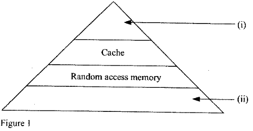
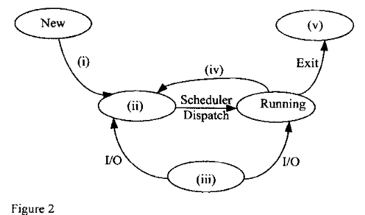
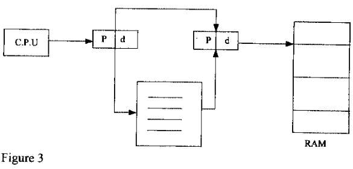

OPERATING SYSTEMS
Exam Code: 2920/105
Duration: 3 hours
Period: November 2014
(a) (i) Outline four resources required in a process execution. CPU Time: The process requires CPU time to execute its instructions and perform computations. Memory: Memory is needed to store the process's code, data, and stack during execution. I/O Devices: The process may require access to I/O devices such as disks, network interfaces, or input devices for data transfer. Files: Access to files may be necessary for reading input or writing output during process execution. (ii) Differentiate between interrupt and system call as used in operating systems. Interrupt: An interrupt is a hardware-generated signal that causes the CPU to suspend its current execution and transfer control to an interrupt handler. Interrupts are asynchronous events typically triggered by external devices or hardware components needing attention, such as I/O devices completing an operation or a timer expiring. System Call: A system call is a software-generated request by a process to the operating system kernel to perform a privileged operation. System calls are synchronous events initiated by a process to request services from the kernel, such as file access, memory allocation, or process creation. They are the interface between user-level processes and the OS kernel. Key Difference: Interrupts are hardware-initiated asynchronous signals for external events; system calls are software-initiated synchronous requests by processes for OS services. (b) (i) Explain the term context switch as used in operating systems. (i) Context Switch: A context switch is the process of saving the state of a currently running process and restoring the state of another process to allow the latter to run. This operation enables multitasking by allowing the CPU to quickly switch between processes, giving the illusion of concurrent execution. It involves saving and restoring CPU registers, program counter, and memory management information. (ii) A lecturer described objectives of process scheduling to an operating systems' class. Explain two objectives that he could have mentioned. Maximize CPU Utilization: One key objective of process scheduling is to keep the CPU as busy as possible. By efficiently managing and switching between processes, the scheduler aims to minimize CPU idle time and ensure that the CPU is always executing some process, thereby maximizing overall system throughput. Minimize Turnaround Time: Another important objective is to minimize the turnaround time for processes. Turnaround time is the total time taken from the submission of a process to its completion. Reducing turnaround time improves system responsiveness and user satisfaction by ensuring that processes complete in a timely manner. (c) Bruce was required to identify the appropriate memory placement techniques for a proposed operating system. Explain three techniques that he could have considered. First-Fit: First-Fit is a memory placement algorithm where the allocator scans memory from the beginning and selects the first available partition large enough to satisfy the request. It's simple and fast for allocation but can lead to fragmentation as it may not always choose the best available block. Best-Fit: Best-Fit is a strategy where the allocator searches the entire memory and chooses the smallest available partition that is large enough to satisfy the request. It aims to minimize wasted space and internal fragmentation, but the search for the best fit can be time-consuming. Worst-Fit: Worst-Fit is a technique where the allocator selects the largest available partition to allocate memory. The idea is to leave larger chunks of free memory available for future, potentially larger allocations. However, it can lead to smaller, less useful fragments over time, increasing external fragmentation. 2. (a) (i) Outline two parts of a directory structure in an operating system. Directory Entry: This part stores metadata about each file or subdirectory, including name, attributes, and location information. Directory File (or Data Block): This part contains the actual list of directory entries, effectively mapping names to inodes or file descriptors. (ii) Explain each of the following terms as used in operating systems: I. access right; I. Access Right: Access rights are permissions granted to users or groups to perform specific operations on files or directories. They define what actions a user can perform, such as reading, writing, or executing a file. Access rights are a key component of file system security, controlling who can access and manipulate files. II. flags. II. Flags: In the context of file systems, flags are indicators or markers associated with files or directories that represent specific attributes or states. Flags can denote various properties, such as whether a file is hidden, read-only, system file, archived, or modified. Flags are used to manage file behavior and characteristics beyond basic access permissions. (b) Figure I shows layers in computer memory hierarchy. Use it to answer the question that follows.  Describe each of the layers labeled (i) and (ii). Based on a typical memory hierarchy pyramid, assuming (i) is the top layer and (ii) is the bottom layer: (i) Cache: Layer labeled (i) represents Cache Memory. Cache is the fastest and smallest memory level in the hierarchy, located closest to the CPU. It is used to store frequently accessed data and instructions to reduce average memory access time. Caches are typically implemented using SRAM and are significantly faster but more expensive than main memory. (ii) Random Access Memory: Layer labeled (ii) represents Random Access Memory (RAM), also known as main memory. RAM is the primary working memory of the computer, located below cache in the hierarchy. It is slower and larger than cache and is used to hold the programs and data that are currently being used by the CPU. RAM is volatile memory, meaning data is lost when power is turned off. (c) Petro was investigating advantages of memory segmentation in operating systems. Explain two advantages that he is likely to have identified. Simplified Memory Management for Programmers: Memory segmentation simplifies memory management from a programmer's perspective. Programmers can organize memory into logical segments (like code, data, stack) and deal with memory in terms of these segments, rather than a single linear address space. This modular view simplifies program structure and memory allocation. Enhanced Protection and Sharing: Segmentation provides memory protection and sharing at the segment level. Each segment can have different access rights (read, write, execute), allowing the OS to protect segments from unauthorized access. Segments can also be shared between processes, enabling efficient data sharing and code reuse among different programs. (d) (i) Outline two types of files that could be found in operating systems. Data Files: These files contain user-created or application-generated data, such as documents, images, videos, and databases. Executable Files: These files contain programs or applications that can be executed by the operating system. (ii) Brian intends to backup files. Explain two backup strategies he could use. Full Backup: In a full backup, all selected files and directories are copied to the backup medium every time a backup is performed. This strategy provides a complete copy of the data and simplifies restoration, as all data is in one backup set. However, it is time-consuming and requires significant storage space as it duplicates all data in each backup. Incremental Backup: In an incremental backup, only the data that has changed since the last backup (full or incremental) is copied. This strategy saves backup time and storage space compared to full backups, as it only backs up changes. Restoration from incremental backups may require restoring the last full backup and then all subsequent incremental backups in sequence. 3. (a) Explain each of the following terms as used in operating systems: (i) bootstrap; (i) Bootstrap: Bootstrap refers to the initial process of starting or booting a computer system. It is a sequence of operations that begins when the computer is powered on, loading and initializing the operating system kernel so that the computer can become operational. The bootstrap process typically involves loading a small initial program (bootstrap loader) from ROM or firmware, which then loads the OS kernel from storage into memory and starts its execution. (ii) firmware. (ii) Firmware: Firmware is a type of software that is embedded in hardware devices. It is typically stored in non-volatile memory such as ROM, EPROM, or flash memory. Firmware provides low-level control and instructions for the hardware device to function. It is often used for boot programs, device controllers, and embedded systems to provide basic operational instructions that are persistent and do not change frequently. Examples include BIOS in PCs and embedded software in devices like routers and printers. (b) Figure 2 shows a typical process model used in operating systems. Use it to answer the question that follows.  Identify the parts labeled (i), (ii), (iii), (iv) and (v). Based on a typical process state diagram, the labels likely represent: (i) Ready State: Label (i) represents the Ready State. Processes in the ready state are waiting to be assigned to the CPU and are ready to run. They are in memory and are waiting for their turn to be scheduled by the dispatcher. (ii) Running State: Label (ii) represents the Running State. A process in the running state is currently being executed by the CPU. Instructions of the process are being actively processed by the processor. (iii) Waiting/Blocked State (I/O Wait): Label (iii) represents the Waiting or Blocked State, specifically due to I/O Wait. Processes enter this state when they initiate an I/O operation and must wait for it to complete. They are blocked and cannot proceed until the I/O operation finishes. (iv) Dispatch: Label (iv) represents the Dispatch transition. This is the action of the dispatcher component of the scheduler that moves a process from the ready state to the running state, allocating the CPU to the selected process. (v) Exit (Terminated State): Label (v) represents the Exit or Terminated State. This is the final state of a process after it has completed its execution. Once a process terminates, it releases its resources and is no longer active in the system. (c) Dorothy intends to design an operating system that uses swapping in memory management. Explain two constraints that are likely to be realized. Performance Overhead of Swapping: Swapping introduces significant performance overhead. The process of swapping processes between RAM and disk is time-consuming, especially when swap space is on a traditional HDD. Disk I/O operations are much slower than RAM access, leading to increased latency and reduced system performance. Frequent swapping, known as thrashing, can severely degrade system responsiveness. Limited Scalability with Memory Size: Swapping effectiveness is limited by the size and speed of secondary storage used for swap space. While swapping allows running programs larger than RAM, performance degrades significantly as the system relies more heavily on swapping. If the swap space is too small or slow, the system may still experience memory limitations and performance bottlenecks, especially with increasing application memory demands. (d) (i) Outline three goals of I/O module. Efficiency: The I/O module aims to perform I/O operations efficiently, maximizing throughput and minimizing latency to ensure fast data transfer and responsiveness. Device Independence: To provide device independence, the I/O module abstracts device-specific details, offering a uniform interface to higher layers, so applications can work with diverse devices without device-specific code. Uniform Interface: The I/O module should present a uniform and consistent interface to the rest of the OS and applications, simplifying I/O operations and making them easier to use and manage. (ii) A group of module II students were carrying out an assignment on I/O protection strategies in operating systems. Explain two strategies that they could identify. Access Control Lists (ACLs) for I/O Devices: Access Control Lists (ACLs) can be used to control which processes or users can access specific I/O devices. ACLs define permissions for operations like read, write, and control for each device, allowing fine-grained control over device access and enhancing security. Privileged Instructions and Kernel-Level I/O: Restricting direct I/O hardware access to the kernel and using privileged instructions for I/O operations is a key strategy. Only the OS kernel, running in a privileged mode, is allowed to directly access I/O hardware. User-level processes must use system calls to request I/O operations, which are then validated and executed by the kernel, enforcing security and preventing unauthorized device access. 4. (a) Distinguish between SCAN and C-SCAN disk scheduling algorithms. SCAN Algorithm (Elevator Algorithm): SCAN, also known as the Elevator algorithm, moves the disk head in one direction across the disk, servicing all requests in its path. When the head reaches one end of the disk, it reverses direction and continues servicing requests in the opposite direction. SCAN behaves like an elevator, moving up and down, servicing requests along its path in both directions. It provides better performance than FCFS and SSTF, especially under heavy load, and offers relatively fair service. C-SCAN Algorithm (Circular SCAN): C-SCAN (Circular SCAN) is a variation of SCAN that is designed to provide more uniform wait times. C-SCAN moves the disk head in one direction only, from one end of the disk to the other, servicing requests along the way. When the head reaches the end of the disk, it quickly returns to the beginning of the disk without servicing any requests during the return trip. C-SCAN provides more equitable service compared to SCAN by limiting head movement to one direction during service and then quickly returning to the start. Key Difference: SCAN services requests in both directions of head movement; C-SCAN services requests only in one direction and quickly returns to the start without servicing on the return trip, leading to more uniform wait times. (b) Hope intends to develop a file management module for an operating system. Explain two file access methods that she should consider. Sequential Access: Sequential access is a method where files are accessed in a linear order, from the beginning to the end. Data is read and written sequentially, one record after another. It's efficient for applications that process files in a linear fashion, like batch processing or streaming data. Sequential access is simple to implement and efficient for ordered data processing. Direct Access (Random Access): Direct access, also known as random access, allows accessing any record in a file directly, without needing to read through preceding records. Records are accessed based on their position or a key. Direct access is efficient for applications that require frequent random data access, such as databases or index-based file retrieval. It provides flexibility in accessing specific data records quickly. (c) With the aid of a diagram in each case, describe each of the following file system: (i) single-level directory; (i) Single-Level Directory: A single-level directory structure is the simplest file organization where all files are placed in a single directory. There is no hierarchy or subdirectories. All files reside directly under the root directory. Diagram: Description: All files are located in one directory. Easy to implement but leads to naming conflicts and poor organization for large numbers of files. (ii) two-level directory. (ii) Two-Level Directory: A two-level directory structure introduces a hierarchy with a root directory and user directories under it. Each user has their own directory, and files are organized within user directories. Diagram: Description: Each user has a separate directory under the root. Resolves naming conflicts between users but limited in organizational depth. (d) (i) Bev was carrying out a study on benefits of multiprocessor systems. Explain two benefits that she could have established. Increased Throughput: Multiprocessor systems significantly increase throughput. By having multiple CPUs, they can execute multiple processes or threads in parallel, completing more tasks in a given time frame. This leads to higher overall system efficiency and productivity. Enhanced Reliability and Fault Tolerance: Multiprocessor systems offer enhanced reliability and fault tolerance. If one processor fails, the system can continue to operate, albeit at a reduced performance level, using the remaining processors. This redundancy makes the system more resilient to hardware failures and improves overall system availability. (ii) Angie was required to investigate factors that affect performance of a storage disk Outline four factors that she could have considered. Seek Time: Seek time is the time it takes for the disk head to move to the correct track. Lower seek times result in faster data access, significantly impacting disk performance. Algorithms and disk mechanics influence seek time. Rotational Latency: Rotational latency is the time it takes for the desired sector to rotate under the read/write head. Disks with higher RPM (rotations per minute) have lower rotational latency, improving data access speed. Data Transfer Rate: Data transfer rate is the speed at which data can be transferred between the disk and the system. Higher transfer rates mean faster read and write operations, directly affecting disk performance. Interface type (SATA, NVMe) and disk technology influence transfer rates. Caching: Disk caching significantly affects performance. The presence and effectiveness of disk cache (buffer in RAM) can dramatically reduce access times for frequently accessed data. Cache hit ratio and cache size are important factors. 5. (a) Explain each of the following tables as used in memory management: (i) hashed; (i) Hashed Page Table: A hashed page table is a page table structure used in virtual memory management to handle large address spaces efficiently. In a hashed page table, the virtual page number is hashed into a hash table. Each entry in the hash table contains a linked list of elements that hash to the same location, and each element contains the virtual page number, the corresponding page frame number, and control bits. Hashed page tables are used to reduce the size of page tables, especially for large address spaces, by providing a more compact representation compared to traditional multi-level page tables. (ii) clustered page. (ii) Clustered Page Table: A clustered page table is a variation of multi-level page tables where page table entries are grouped into clusters. Instead of a single large page table, the page table is divided into smaller, fixed-size clusters or chunks. This approach is used to improve the locality of reference for page table entries and reduce the memory overhead of page tables, especially in systems with very large address spaces. Clustering page table entries can improve cache performance for page table accesses and reduce the overall memory footprint of page tables. (b) Distinguish between long-term and short-term schedulers as used in process management. Long-Term Scheduler (Job Scheduler): The long-term scheduler, or job scheduler, controls the degree of multiprogramming by selecting processes from a job pool and loading them into memory for execution. It is invoked less frequently and makes decisions about which programs are admitted to the ready queue. The long-term scheduler focuses on balancing the mix of jobs in the system and controlling the number of active processes in memory. Short-Term Scheduler (CPU Scheduler): The short-term scheduler, or CPU scheduler, selects from the ready queue and decides which process should be executed by the CPU next. It is invoked very frequently, typically every few milliseconds, and makes fine-grained decisions about CPU allocation. The short-term scheduler aims to maximize CPU utilization, minimize response times, and improve overall system performance by efficiently switching between ready processes. Key Difference: Long-term scheduler controls the degree of multiprogramming and job admission (less frequent); short-term scheduler controls CPU allocation to ready processes (very frequent). (c) Loise was required to run disk management utilities during computer maintenance. Explain three examples of utilities that she could use. Disk Defragmentation Utility: A disk defragmentation utility is used to reorganize files on a disk to reduce fragmentation. Over time, files can become fragmented, meaning their parts are scattered across non-contiguous blocks on the disk. Defragmentation utilities rearrange file blocks to make them contiguous, improving disk access speed, especially for frequently accessed files, and enhancing overall system performance. Disk Check Utility (e.g., CHKDSK, fsck): A disk check utility is used to scan the file system for errors and repair them. It checks the file system metadata, file structures, and disk surface for inconsistencies, bad sectors, or other errors. Disk check utilities can detect and fix file system corruption, logical errors, and physical disk problems, ensuring data integrity and system stability. Disk Cleanup Utility: A disk cleanup utility is used to free up disk space by removing unnecessary files. It can identify and delete temporary files, internet cache files, old system files, and other unnecessary data that accumulates over time. Disk cleanup utilities help to reclaim storage space, improve disk performance, and reduce clutter, optimizing disk usage and system efficiency. (d) Figure 3 shows a memory allocation technique. Use it to answer questions that follow.  (i) Explain the memory management techniques depicted in the figure. (i) Paging: The memory management technique depicted in Figure 3 is Paging. The diagram illustrates a non-contiguous memory allocation, where a process's logical address space is divided into fixed-size blocks called pages (P), and these pages are mapped to non-contiguous, fixed-size blocks of physical memory called frames (d) in RAM. The use of pages and frames and the non-contiguous nature of allocation are key indicators of paging. (ii) Explain two advantages of the memory management technique identified in (i). Eliminates External Fragmentation: Paging eliminates external fragmentation. Since memory is allocated in fixed-size pages and frames, any free frame can be used to store any page of a process. There is no issue of fragmented free space between variable-sized blocks, as in segmentation or dynamic partitioning. This leads to more efficient use of physical memory. Efficient Memory Utilization and Flexible Allocation: Paging allows for more efficient memory utilization and flexible allocation. Only the necessary pages of a process need to be loaded into memory, and pages can be placed in any available frame, which can be non-contiguous. This fine-grained allocation and efficient use of frames improves memory utilization and supports a higher degree of multiprogramming. 6. (a) Explain each of the following terms as used in disk operations: (i) seek time; (i) Seek Time: Seek time is the time taken for the disk arm and read/write head to move to the specific track (cylinder) on the disk platter where the desired data is located. It is the time required to position the head over the correct track before data can be read or written. Seek time is a major factor contributing to disk access latency. (ii) transfer rate; (ii) Transfer Rate: Transfer rate, also known as data transfer rate or bandwidth, is the speed at which data can be transferred between the disk and the computer system (typically memory or CPU). It is usually measured in megabytes per second (MB/s) or gigabytes per second (GB/s). Transfer rate indicates how quickly data can be read from or written to the disk once the read/write head is positioned correctly and rotational latency is accounted for. (ii) rotational latency. (iii) Rotational Latency: Rotational latency, also known as rotational delay, is the time it takes for the desired sector on the disk to rotate under the read/write head once the head is positioned over the correct track. After the seek operation is complete, rotational latency is the time spent waiting for the disk to rotate to the correct sector position before data transfer can begin. Rotational latency is dependent on the disk's rotational speed (RPM). (b) Stano listed several examples of I/O buses that could be used in a disk drive. Outline four examples that he could have listed. SATA (Serial ATA): SATA is a common interface bus used for connecting storage devices like HDDs and SSDs to the motherboard. It provides high-speed serial data transfer and is widely used for internal disk drives in desktop and laptop computers. NVMe (Non-Volatile Memory Express): NVMe is a high-performance interface bus designed specifically for SSDs. It utilizes the PCIe bus for significantly faster data transfer rates and lower latency compared to SATA, making it ideal for high-speed SSDs used in demanding applications. SAS (Serial Attached SCSI): SAS is a bus interface used primarily for enterprise-level storage devices, such as high-performance HDDs and tape drives. SAS offers high data transfer rates, reliability, and scalability, often used in servers and storage arrays. IDE/ATA (Integrated Drive Electronics/Advanced Technology Attachment): IDE/ATA, also known as Parallel ATA (PATA), is an older bus interface for connecting storage devices. While largely replaced by SATA, IDE/ATA was widely used in older systems and is still relevant in understanding legacy systems. (c) File attributes varies from one operating system to another. Outline five examples of these attributes. File Name: The name of the file, used to identify and access the file within a directory. File Size: The size of the file, indicating the amount of storage space it occupies, typically in bytes or kilobytes. File Type: The type of file, indicating the format and intended use of the file (e.g., text file, executable file, directory). Timestamps: Timestamps such as creation time, last modification time, and last access time, recording when the file was created, last modified, and last accessed. Access Permissions/Attributes: Access permissions controlling who can access the file and what operations they can perform (read, write, execute); attributes like read-only, hidden, system file, archive. (d) With the aid of a diagram, outline a typical process control block (PCB) diagram as used in operating systems. Process Control Block (PCB) Diagram: The Process Control Block (PCB) is a data structure used by the OS to manage and track each process. It contains all the necessary information about a process. Diagram of a Process Control Block (PCB): Description: The PCB typically includes sections for: Process Identification: Contains unique identifiers like Process ID (PID) and User ID (UID). Process State: Indicates the current state of the process (e.g., Running, Ready, Blocked). Program Counter (PC): Stores the address of the next instruction to be executed. CPU Registers: Saves the state of CPU registers to allow process resumption after interruption. Memory Management Info: Holds pointers to page tables or segment tables for memory management. CPU Scheduling Info: Includes scheduling priority and queue pointers for process scheduling. I/O and File Management: Lists open files and allocated I/O devices. Accounting Information: Tracks resource usage like CPU time and execution time. The PCB is essential for the OS to manage and control each process effectively. 7. (a) (i) Define the term livelock as used in process management. (i) Livelock: Livelock is a concurrency control issue similar to deadlock, but in livelock, processes are not blocked; instead, they continuously change their state in response to each other, without making progress. Processes in a livelock are actively engaged in resolving a conflict but are unable to make forward progress, effectively stuck in a loop of unproductive activity. Unlike deadlock, processes in livelock are not waiting for each other to release resources but are constantly reacting to each other's actions. (ii) Distinguish between overlaying and partitioning as used memory management. Overlaying: Overlaying is a memory management technique where a process is divided into segments (overlays), and only the currently needed segments are loaded into memory. Segments are loaded into a fixed memory area, overwriting previously loaded segments as needed. Overlaying is a manual technique requiring programmers to divide programs into overlays and manage their loading and unloading. It was used in early systems with limited memory to run programs larger than physical memory. Partitioning: Partitioning is a memory management technique that divides main memory into fixed or variable-sized partitions. Each partition can hold one process. Fixed partitioning divides memory into static partitions at system startup, while dynamic partitioning allocates partitions of variable size based on process needs at runtime. Partitioning is used to enable multiprogramming by allocating separate memory regions to different processes. Key Difference: Overlaying is a program-centric technique where program segments are swapped in and out of a fixed memory area, managed by programmers. Partitioning is an OS-centric technique that divides memory into partitions to hold different processes, enabling multiprogramming. (b) Mercy, an intern student was required to discuss examples of file operations during a job interview. Outline four examples that she could have mentioned. Create: Create is a file operation used to make a new file in the file system. It allocates storage space and sets up metadata for the new file, preparing it for data storage. Read: Read is an operation to retrieve data from a file. It involves accessing the file's contents and transferring data from the storage device to memory for processing or display. Write: Write is a file operation used to store data into a file. It involves transferring data from memory to the file on the storage device, modifying or adding to the file's contents. Delete: Delete is an operation to remove a file from the file system. It deallocates storage space occupied by the file and removes the file's directory entry, making the file no longer accessible. (c) Sayd Company Ltd. intends to replace its single-processor operating system. Outline four limitations of the existing operating system that could have influenced the decision. Limited Performance and Throughput: A single-processor OS limits performance and throughput, especially under heavy workloads or when running multiple applications concurrently. It can only execute one process at a time, leading to bottlenecks when handling multiple tasks or user requests. Performance may degrade significantly as workload increases. Poor Responsiveness in Multitasking Environments: In multitasking environments, a single-processor OS can exhibit poor responsiveness. When running multiple applications, users may experience delays and sluggishness as the single CPU has to time-share its resources among all processes. Responsiveness for interactive tasks may suffer, especially if CPU-intensive processes are running. Inefficient Resource Utilization: Single-processor systems can lead to inefficient utilization of system resources. While one process is using the CPU, other system components, such as memory or I/O devices, may be underutilized. The system cannot fully leverage parallelism or concurrency to maximize resource usage, limiting overall efficiency. Lack of Scalability for Demanding Applications: A single-processor OS is not scalable for demanding applications or growing workloads. As the company's processing needs increase, a single-processor system cannot easily scale to handle the increased load. Upgrading to a multiprocessor system and OS becomes necessary to achieve better scalability and performance for demanding applications and future growth. (d) Claudius was required to list advantages of dynamic linking in memory management. Explain three advantages that he is likely to have listed. Reduced Memory Footprint: Dynamic linking reduces the memory footprint of applications. With dynamic linking, shared libraries are loaded into memory only once and are shared among multiple processes that use them. This avoids redundant copies of libraries in memory for each application, saving significant memory space, especially when many applications use the same libraries. Disk Space Savings: Dynamic linking saves disk space. Shared libraries are stored only once on disk, and multiple executables link to the same shared library file. This reduces the overall disk space occupied by applications and libraries, as shared code is not duplicated across multiple executables. Disk space savings are particularly beneficial in systems with limited storage capacity or when distributing software. Simplified Software Updates and Patches: Dynamic linking simplifies software updates and patching. When a shared library is updated or patched (e.g., for security fixes or bug fixes), the update only needs to be applied to the shared library file. All applications that dynamically link to this library automatically benefit from the update the next time they are executed, without needing to be re-linked or recompiled. This simplifies software maintenance and deployment of updates and patches. 8. (a) (i) Define the term programmable interval timer as used in operating systems. (i) Programmable Interval Timer: A programmable interval timer (PIT) is a hardware timer component in a computer system that can be programmed to generate interrupts at regular intervals. The interval between interrupts is programmable, allowing the OS to configure the timer to generate interrupts at desired frequencies. PITs are used by the operating system for timekeeping, scheduling, and managing time-dependent operations. (ii) Outline four services that could be provided by I/O subsystem kernel. Device Driver Management: The I/O subsystem kernel manages device drivers, loading, initializing, and unloading them as needed. It provides an interface for device drivers to interact with the kernel and handle device-specific operations, abstracting hardware details from the rest of the OS. I/O Scheduling and Queue Management: The kernel's I/O subsystem performs I/O scheduling, managing the order and priority of I/O requests to optimize disk performance and fairness. It maintains I/O queues for different devices and uses scheduling algorithms to determine which I/O request to service next, improving overall I/O throughput and response times. Buffering and Caching: The I/O subsystem implements buffering and caching mechanisms to improve I/O performance. It manages buffers in memory to temporarily store data during I/O transfers, handling speed mismatches and data size adaptation. Disk caching is used to cache frequently accessed disk blocks in RAM to reduce disk access latency. Error Handling and Device Management: The I/O subsystem kernel is responsible for handling I/O errors and managing I/O devices. It detects and handles device errors, implements error recovery procedures, and reports errors to the OS and applications. Device management includes device initialization, configuration, allocation, and deallocation of I/O resources to processes. (b) Explain four circumstances that would necessitate premature termination of a process execution in an operating system Error Conditions and Exceptions: Fatal errors or exceptions during process execution can necessitate premature termination. If a process encounters an error it cannot handle, such as a segmentation fault, illegal instruction, division by zero, or unrecoverable system error, the OS may terminate the process to prevent further damage or instability to the system. Resource Limits Exceeded: If a process exceeds its allocated resource limits, the OS may terminate it prematurely. Resource limits can include CPU time limits, memory limits, file size limits, or I/O limits. Exceeding these limits may indicate a runaway process, resource exhaustion, or policy enforcement, leading to termination to protect system resources and other processes. User Intervention or Termination Request: A user or administrator may explicitly request to terminate a process. Users can use commands like 'kill' or task managers to terminate processes that are unresponsive, malfunctioning, or no longer needed. User intervention allows for manual control over process execution and termination. Deadlock or System Hang Situations: In deadlock or system hang situations, where processes are blocked indefinitely, the OS may need to terminate one or more processes to break the deadlock and recover system functionality. Deadlock resolution strategies may involve process abortion as a means to release resources and allow other processes to proceed. Termination is a drastic measure to resolve critical system issues like deadlocks. (c) With the aid of a diagram, describe the parts of a magnetic disk Parts of a Magnetic Disk with Diagram: A magnetic disk, such as a Hard Disk Drive (HDD), consists of several key components that work together to store and retrieve data. Diagram of Magnetic Disk Parts: Description of Parts: Platters: Platters are the circular disks made of aluminum or glass, coated with a magnetic material. Data is stored magnetically on both surfaces of each platter. A hard disk typically contains multiple platters stacked on a spindle to increase storage capacity. Platters rotate at high speeds, enabling data access. Spindle: The Spindle is the central axis around which the platters rotate. It is driven by a motor that spins the platters at a constant speed (e.g., 5400 RPM, 7200 RPM). The spindle ensures consistent and high-speed rotation of the platters, enabling the read/write heads to access data sectors. Read/Write Heads and Actuator Arm: Read/Write Heads are electromagnetic components that read and write data on the platter surfaces. Each platter surface has its own read/write head, mounted on an Actuator Arm. The actuator arm moves the heads radially across the platters to position them over different tracks or cylinders. The heads float very close to the platter surface but do not touch it during normal operation. Disk Controller: The Disk Controller is an electronic circuit board that controls the operation of the hard disk and provides an interface between the disk drive and the computer system bus (e.g., SATA, NVMe). The controller manages data transfer, error correction, disk formatting, and communication with the host system. It translates high-level commands from the OS into low-level signals for the disk drive components.1. (a) (i) (4 marks)
Answer
1. (a) (ii) (4 marks)
Answer
1. (b) (i) (2 marks)
Answer
1. (b) (ii) (4 marks)
Answer
1. (c) (6 marks)
Answer
2. (a) (i) (2 marks)
Answer
2. (a) (ii) (2 marks)
Answer
2. (a) (ii) (2 marks)
Answer
2. (b) (4 marks)
Answer
2. (c) (4 marks)
Answer
2. (d) (i) (2 marks)
Answer
2. (d) (ii) (4 marks)
Answer
3. (a) (i) (2 marks)
Answer
3. (a) (ii) (2 marks)
Answer
3. (b) (5 marks)
Answer
3. (c) (4 marks)
Answer
3. (d) (i) (3 marks)
Answer
3. (d) (ii) (4 marks)
Answer
4. (a) (4 marks)
Answer
4. (b) (4 marks)
Answer
4. (c) (i) (2 marks)
Answer
+---------------------+
| Root Directory |
+---------------------+
| File A |
| File B |
| File C |
| ... |
| File N |
+---------------------+
4. (c) (ii) (2 marks)
Answer
+---------------------+
| Root Directory |
+---------------------+
| User Directory 1 | --> [File 1A, File 1B, ...]
| User Directory 2 | --> [File 2A, File 2B, ...]
| ... |
| User Directory N | --> [File NA, File NB, ...]
+---------------------+
4. (d) (i) (4 marks)
Answer
4. (d) (ii) (4 marks)
Answer
5. (a) (i) (2 marks)
Answer
5. (a) (ii) (2 marks)
Answer
5. (b) (4 marks)
Answer
5. (c) (6 marks)
Answer
5. (d) (i) (2 marks)
Answer
5. (d) (ii) (4 marks)
Answer
6. (a) (i) (2 marks)
Answer
6. (a) (ii) (2 marks)
Answer
6. (a) (ii) (2 marks)
Answer
6. (b) (4 marks)
Answer
6. (c) (5 marks)
Answer
6. (d) (5 marks)
Answer
+-------------------------------------+
| Process Identification |
| ----------------------------------- |
| Process ID (PID) |
| User ID (UID) |
+-------------------------------------+
| Process State |
| ----------------------------------- |
| Current State (Running, Ready, ...) |
+-------------------------------------+
| Program Counter (PC) |
| ----------------------------------- |
| Address of next instruction |
+-------------------------------------+
| CPU Registers |
| ----------------------------------- |
| General Purpose Registers |
| Stack Pointer |
| ... |
+-------------------------------------+
| Memory Management Info |
| ----------------------------------- |
| Page Table Base Address |
| Segment Table Base Address |
| ... |
+-------------------------------------+
| CPU Scheduling Info |
| ----------------------------------- |
| Priority |
| Scheduling Queue Pointers |
| ... |
+-------------------------------------+
| I/O and File Management |
| ----------------------------------- |
| List of Open Files |
| Allocated I/O Devices |
| ... |
+-------------------------------------+
| Accounting Information |
| ----------------------------------- |
| CPU Time Used |
| Execution Time |
| ... |
+-------------------------------------+
7. (a) (i) (2 marks)
Answer
7. (a) (ii) (4 marks)
Answer
7. (b) (4 marks)
Answer
7. (c) (4 marks)
Answer
7. (d) (6 marks)
Answer
8. (a) (i) (2 marks)
Answer
8. (a) (ii) (4 marks)
Answer
8. (b) (8 marks)
Answer
8. (c) (6 marks)
Answer
_________________________
| |
| Platter(s) | <-- (1) Circular Platters coated with magnetic material
| _______ |
| / \ |
| | Spindle | | <-- (2) Spindle - Central axis for platter rotation
| \_______/ |
| |
+-------------------------+
/ | \
/ | \
Read/Write Heads ----+-----+---- Actuator Arm <-- (3) Actuator Arm & Read/Write Heads
(per platter surface) (Moves heads across platters)
|
V
+-------------+
| Controller | <-- (4) Disk Controller - Interface to system bus
+-------------+